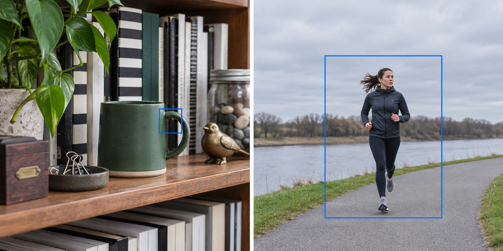

Choose a small focus area when the target is predictable and the background is competing for attention. Choose a wider area when the subject changes position or you need the camera to search a larger part of the frame. The best starting point depends on where the subject is, how large it appears, and how much background ambiguity you can tolerate—not on the number of focus points advertised by a camera.
Camera makers use different labels for similar ideas: Single Point, Spot, Wide, Zone, and Auto Area are common examples. This article compares the behavior behind those labels. It does not compare face-detection performance or tell you which brand focuses fastest.
The two choices in plain language
| Starting choice | What the camera is allowed to search | Best fit when | Main failure signal |
|---|---|---|---|
| Single point or small spot | A selected point or small area | The subject is predictable and you need precise control | The camera misses because the point is not on the target |
| Wider area or zone | A broader region of the frame | The subject moves within a known region or changes position | The camera selects a more contrasty background object |
Sony’s focus guide uses the subject’s size on screen as a practical clue: a small area works when the subject covers that area, while a wider setting can help with faster or less predictable movement. Nikon’s glossary likewise describes Single Point as useful for a static subject and Auto Area as a camera-selected focus choice. Those are behavior descriptions, not a promise that one setting will work on every model.
When a small area helps
Single-point autofocus is a control choice. You tell the camera approximately where the important subject is, and it does not have the same freedom to choose a different object elsewhere in the frame.
Picture a mug on a table with a patterned shelf behind it. A small focus point placed over the mug can prevent the shelf’s high-contrast lines from becoming the camera’s preferred target. The cost is that you must place the point accurately. If it falls on the table edge, the background, or empty texture, the camera can focus exactly where you asked—even when that was not your intention.
A small area also makes sense when the subject is small in the frame but its position is stable. First enlarge the subject in the viewfinder or screen enough that the focus area covers a meaningful part of it. Sony warns that a spot area should overlap the subject; if the subject does not cover the area, background focus becomes more likely.
Small does not mean “always more accurate.” It means “more controlled if you can place it.” That distinction matters for beginners who assume a tiny focus box automatically improves every photograph.
When a wider area helps
A wider area gives the camera more room to search. That can be useful when a person, cyclist, or child moves through a predictable part of the frame and keeping one small point over the subject would be difficult. Sony’s guidance distinguishes slow or predictable movement, where a small area can work, from faster or unpredictable movement, where a wider area can help maintain focus while the composition changes.
The cost is ambiguity. A wider area may contain the subject, a fence, a bright sign, and a nearby branch at the same time. If the camera chooses the background, the frame can look “focused” while the intended subject is soft. A wider setting therefore trades some control for a larger chance of keeping the target inside the search region.
Do not confuse area width with focus timing. Single versus continuous autofocus answers whether the camera keeps adjusting distance; this article answers where the camera is allowed to look. You may use a small or wide area with different focus-timing modes, depending on the device.
Compare the same criteria
Use this matched decision table rather than counting focus points:
| Scene condition | Prefer a small area when… | Prefer a wider area when… | Check the frame for… |
|---|---|---|---|
| Isolated object | The object is still and easy to place under the point | The object moves across a known region | The object’s edge, not a nearby high-contrast line |
| Object among clutter | You can place the point precisely on the target | You cannot keep the target inside a small point | Whether the background became the sharpest thing |
| Person crossing the frame | The movement is slow and predictable | The person moves quickly or changes position | Face or body detail at the intended focus distance |
| Vertical reframe | You can move the point after rotating | The subject may leave the selected point | Whether the focus area changed with orientation |
The same room can justify different choices. A stationary notebook on a clean desk is a small-area problem. A person walking past that desk may justify a wider area if the background is simple enough. If the desk is covered with high-contrast objects, the wider option may create more false targets than it solves.
Diagnose the failure, then change one thing
If the wrong object is sharp, first identify what the camera selected. Was it a bright label, a railing, or the nearest edge? If the competing object is inside the current area, shrink the area or reposition it. If the subject repeatedly leaves the point, consider widening the area only when your device documents that behavior and the background is not more confusing.
If nothing in the frame is sharp, the problem may be focus distance, subject contrast, camera movement, or focus timing rather than area width. Do not keep switching between Single Point and Area as if the names were a universal repair tool.
A practical choice card
Before a sequence, write four details:
- Target: What exact object or part should be sharp?
- Predictability: Will it stay under one point, or move within a region?
- Competition: What else inside that region could attract focus?
- Verification: Which edge, face, or texture will you inspect after capture?
For a mug on a crowded shelf, the answer might be: “Target the mug handle; it is still; the shelf lines are competing; inspect the handle edge.” Start with a small point. For a child moving across a plain wall, the answer might be: “Target the child’s face; position changes quickly; the wall has little detail; inspect the face after the frame.” A wider area may be the more forgiving starting point.
There is no universal winner. Use the smallest search area that you can place reliably when control matters, and widen it when movement makes that control unrealistic. Then verify the actual target—not the focus-box label—in the captured frame.
Research sources
Sources
- Focus Setting Guide: Setting item hints — Sony USA
- Photography Glossary: AF Area Modes — Nikon USA
- Nikon School: Shooting Action — Nikon School
- How to take a good photo: Photo guide — UK Government